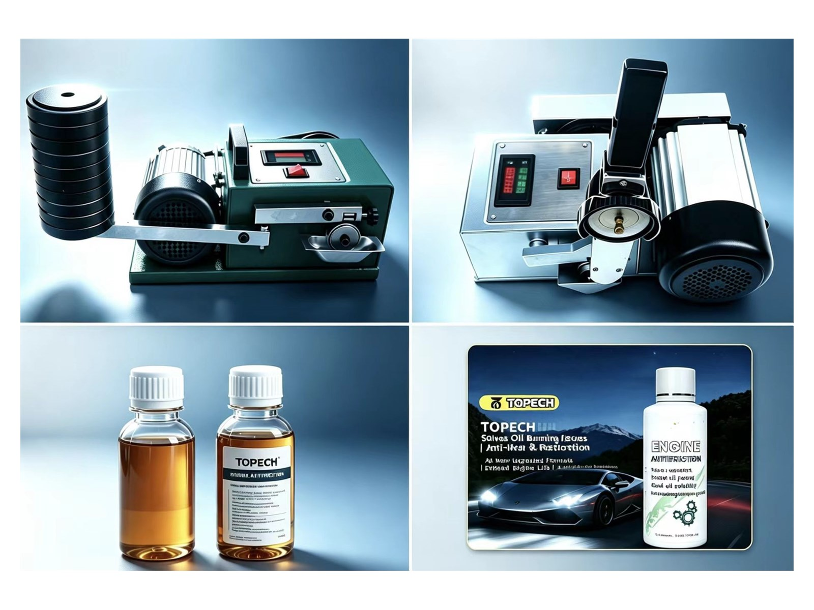
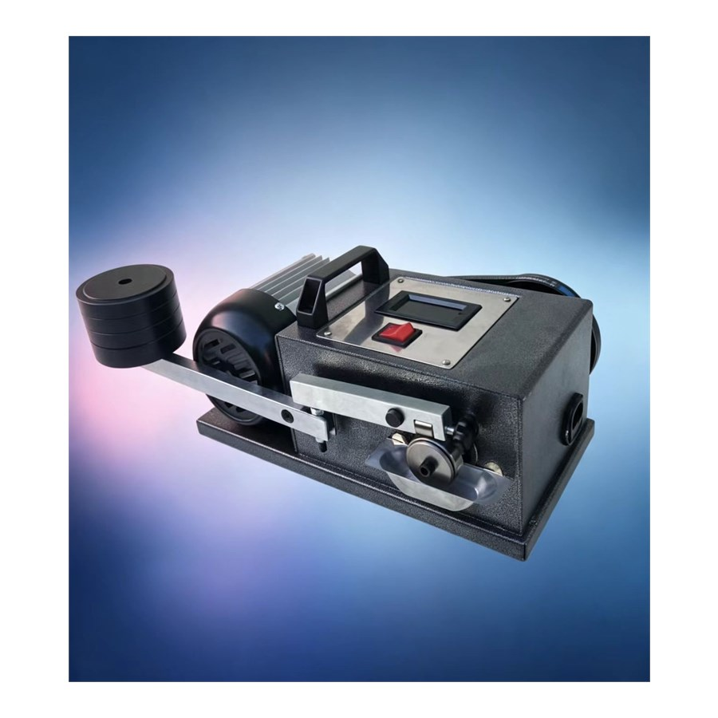
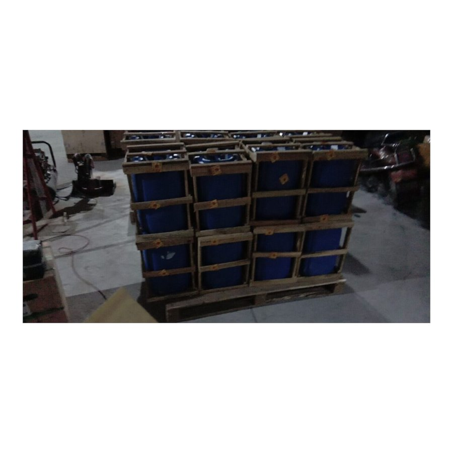
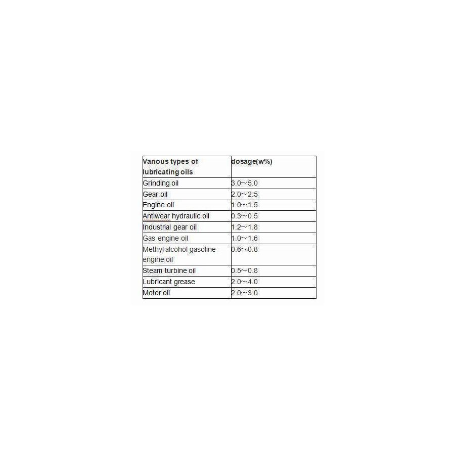
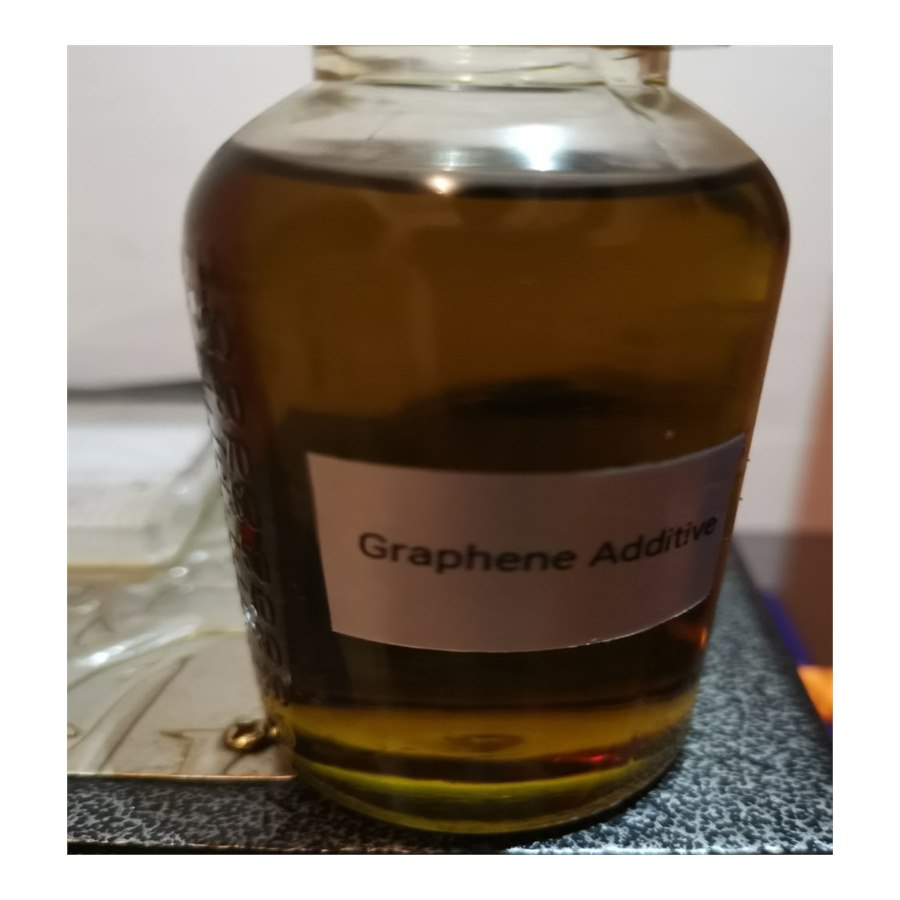

Portable oil friction testers, ASTM/GB standard petroleum analysis instruments and high-performance engine oil additives. Serving lubricant labs, refineries, power plants and automotive aftermarket worldwide.

Quickly find the instruments and additives you need by product line
Portable oil friction testers, anti-wear demonstration machines and high-temperature engine oil testers for lubricant performance evaluation.
3 Products →Flash point, kinematic viscosity, pour point, acidity, water content, density, color and copper strip corrosion testers to ASTM / GB standards.
10 Products →Nano graphene, organic fullerene and boron-based anti-wear additives, drilling lubricants and engine oil system cleaners.
6 Products →Best-selling test equipment and additives from the TOPECH factory




From lubricant labs to drilling sites — covering diverse oil product testing needs
Side-by-side friction demonstration of ordinary vs. anti-wear oils with portable testers — ideal for distributors and showroom promotion.
Flash point, viscosity, pour point, density and color testing of fuels and lubricants per ASTM / GB standards in refinery and lab QC.
Karl Fischer water content and acidity value testing for insulation oil condition assessment in power plants and utilities.
Factory-direct instruments and additives with dependable after-sales support
Buy straight from the manufacturer. Competitive pricing for distributors, labs and bulk orders — with OEM labeling available.
Instruments designed to ASTM D92/D93, ASTM D445, ASTM D130, ASTM D1500, GB/T 510, GB/T 1884 and other international methods.
Export-grade wooden case packaging with worldwide delivery. Sample units and additive bottles ship quickly by air express.
Operation manuals, test videos and remote engineering support for the full product lifecycle from our engineering team.